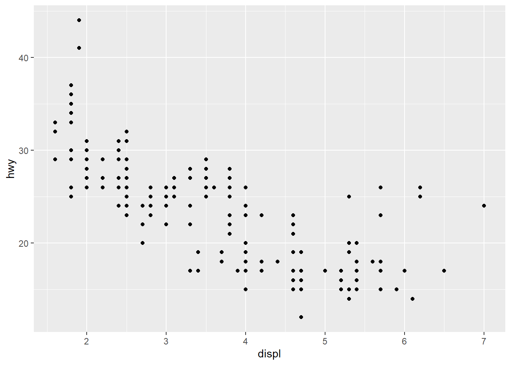

library(ggplot2)
head(mpg)## # A tibble: 6 x 11
## manufacturer model displ year cyl trans drv cty hwy fl class
## <chr> <chr> <dbl> <int> <int> <chr> <chr> <int> <int> <chr> <chr>
## 1 audi a4 1.8 1999 4 auto(l5) f 18 29 p compa~
## 2 audi a4 1.8 1999 4 manual(m5) f 21 29 p compa~
## 3 audi a4 2 2008 4 manual(m6) f 20 31 p compa~
## 4 audi a4 2 2008 4 auto(av) f 21 30 p compa~
## 5 audi a4 2.8 1999 6 auto(l5) f 16 26 p compa~
## 6 audi a4 2.8 1999 6 manual(m5) f 18 26 p compa~# basic plot
ggplot(mpg) + geom_point(aes(x = displ, y = hwy))